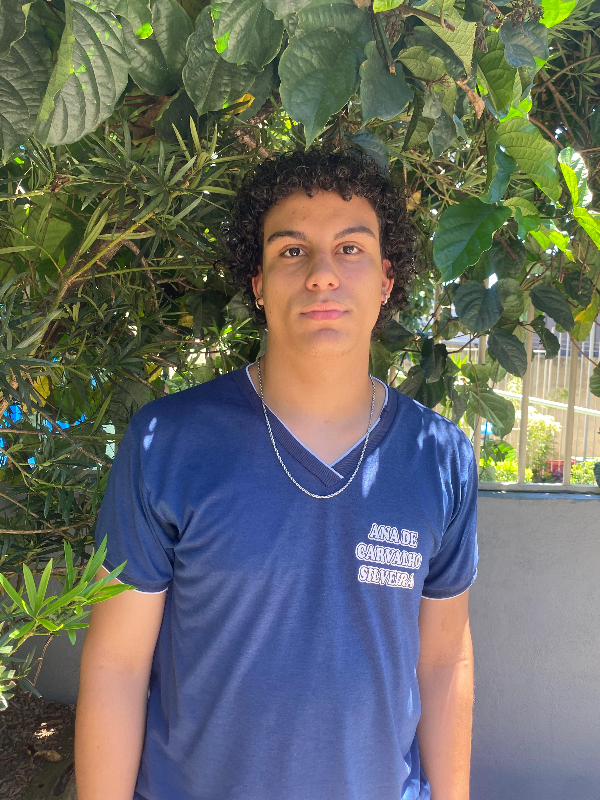

título

No curso, Iury aprendeu a programar, sua maior dificuldade é arduino e sua maior facilidade é manutenção de computadores, o que ele mais gosta é manutenção de computadores também, segundo ele o curso influência na sua carreira profissional abrindo portas, ele não tem certeza se quer seguir a carreira de informática, quando ele fez o seu primeiro site, ele se orgulha de ter aprendido a programar, ele prefere entender o impacto da tecnologia na sociedade um conselho dele é não desistir, o curso também influênciou na sua forma de apresentar em público.
Descrição do portifolio